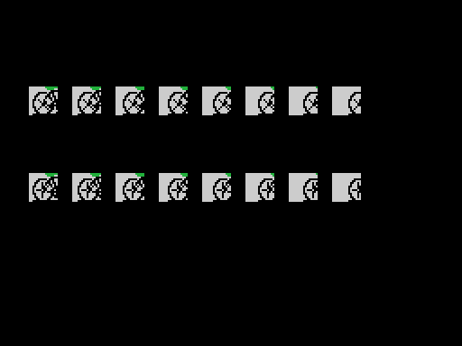

Todo lo de aquí está medido sobre este cartucho, con las herramientas de tools/.
Los doce bytes que INIT copia de 0x40CF a 0xE053 son las cuatro marcas a batir: 1'45"34 en el ciclismo, 17,97 m en el triple salto, 100 puntos en el curling y 5,90 m en la pértiga. Son los únicos valores de toda la RAM de trabajo que no arrancan a cero.
Están en RAM y no en ROM porque el juego los sobrescribe: 0x93D1 mete el tiempo del ciclista encima del récord en cuanto se mejora. La ROM no guarda ningún récord, guarda un valor de salida.
Los dos que se pueden cotejar cuadran con la época del cartucho: los 17,97 m son los de Willie Banks, de junio de 1985, y los 5,90 m los de Serguéi Bubka, de 1984.
Y hay una tercera marca fechada donde no se espera: de los ocho listones del triple salto, el sexto es 17,89 m, que era el récord del mundo de Joao Carlos de Oliveira.
Dos instrucciones del arranque escriben dentro del propio cartucho:
pop hl y un ret encima del djnz de 0x412F. Carga 0xC9E1 en HL y lo suelta de golpe: en memoria esos dos bytes son E1 C9, que se leen como pop hl y ret.jp de 0x413A. En memoria eso lo convierte en jp 00000h, un reinicio en seco.Ninguna de las dos hace nada aquí. El cartucho corre desde ROM, y la ROM no admite escritura: por eso parecen código muerto. No lo son. Un cartucho pirateado es una copia cargada en RAM, y ahí la escritura sí cuela y rompe el juego. Que no haga nada en el original es justo la gracia.
No es una idea suelta de este cartucho: el mismo par —una escritura sobre un djnz y otra sobre el operando de un jp— aparece en nueve cartuchos de esta serie, siempre en las mismas dos rutinas del arranque, y la segunda sola en uno más. Las identificó Manuel Pazos en su desensamblado del RC-727, donde las llamó ReadKeys_AC y VRAM_writeAC.
Cada prueba tiene su cinta de mandos guardada en la ROM, y el bucle la va soltando fotograma a fotograma como si fuera el mando. Por eso la demostración hace siempre exactamente lo mismo, con las mismas marcas.
El ciclismo no tiene grabación. Ahí el rival se mueve con ld a,r —el registro de refresco de la DRAM, que va subiendo con cada instrucción— usado como dado. Es la única prueba en la que la demostración no sale igual dos veces.
La tabla de 0x7346 son noventa grados de seno, un byte por grado, con el 0xFF en el noventa. Con ella y un desplazamiento de un cuarto de vuelta salen las dos componentes de cualquier ángulo.
Y en el curling ni siquiera se calcula el ángulo: las dos curvas de la piedra normalizan el vector y se quedan con las dos componentes. La piedra sale recta sin que el cartucho sepa nunca cuántos grados lleva.
Parecía tener diez entradas y sobraban dos índices. Los dos que faltaban están escondidos en la entrada [0] de la tabla de pistas, la que se daba por muerta porque ninguna pista la usa: sus dos bytes son la continuación de la tabla de al lado. L_4D75 la indexa con el nibble alto del byte de nota, que llega hasta 0x0B, o sea doce.
Es el mismo truco que la tabla de listones de la pértiga, apuntada dos bytes por debajo para que el índice empiece en uno en vez de en cero.
Las cuatro pruebas mueven la pantalla, y ninguna lo hace igual. El ciclismo guarda el circuito en dos ventanas de la RAM y las desplaza una columna por fotograma. El salto guarda la pista dos veces, en su sitio y corrida cuatro píxeles, y alterna. El curling no guarda media pista: espeja la mitad derecha del hielo a mano, bit a bit.
Son cuatro casillas de la tabla de patrones. Para moverse al píxel, 0x9CC7 genera al arrancar la prueba ocho copias del dibujo corridas un píxel cada una, rotando los bits; y de paso saca la máscara, que es el 0xFF al que se le van metiendo ceros por delante. Encima van cinco sprites, que son el corredor.

En la carrerilla, el atleta no sale de ninguna tabla de figuras: son tres piezas de 0x6E15 y las que traiga 0x6B6A, más el sprite de la punta y las doce casillas de la pértiga. Los dos grupos comparten el contador de patrones, porque los patrones se descomprimen seguidos a 0x1800.
Cotejado contra la VRAM del emulador en el primer fotograma en que el cartucho lo dibuja: los seis sprites idénticos y cero de 2.048 bytes de patrón distintos.
Entre las figuras y los guiones relativos hay una rutina completa que no llama nadie: divide HL entre 32 sin perder por arriba. Es exactamente lo que hace a mano el reparto de la dirección de la piedra del curling. Alguien la escribió, la dejó de usar y nadie la borró.
Los últimos dieciséis bytes son el título en katakana y del revés — ハイパースポーツ3—, su longitud, el 0x33 del RC-733 y un 0xAA. No lo lee nadie. La marca la descubrió Manuel Pazos.
Las cinco pantallas están cotejadas byte a byte contra la VRAM de openMSX, y el cotejo destapó cosas que mirar el dibujo no destapaba:
L_91F9), que trae el marco del marcador y 140 bytes de patrones de sprite. Sin ella faltaba medio marcador.ld a,020h / ld (0e0e3h),a suelto en 0x54CD, dentro del montaje de las variables.0xA911.